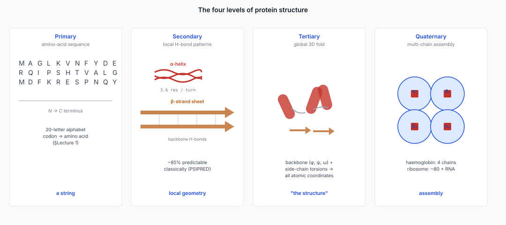
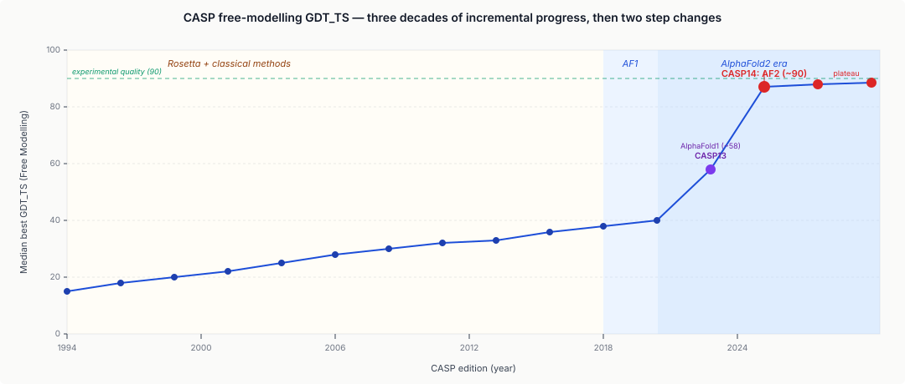
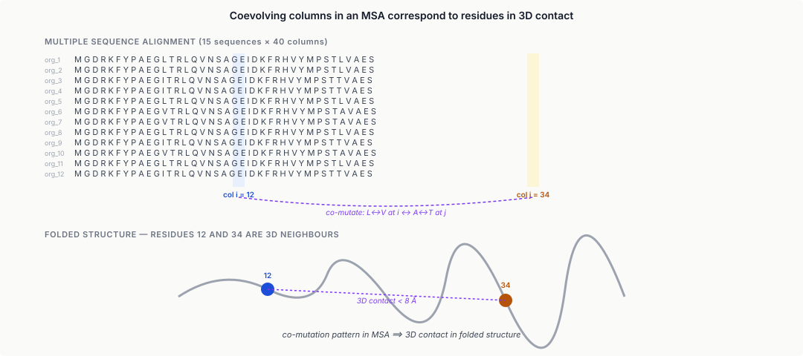
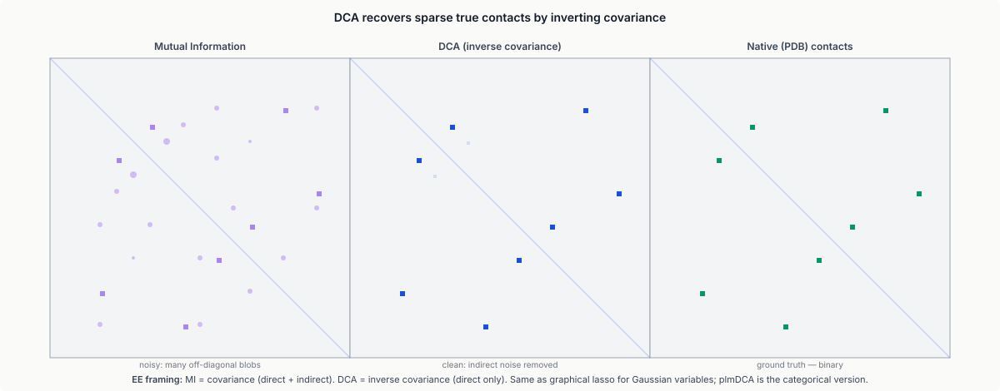
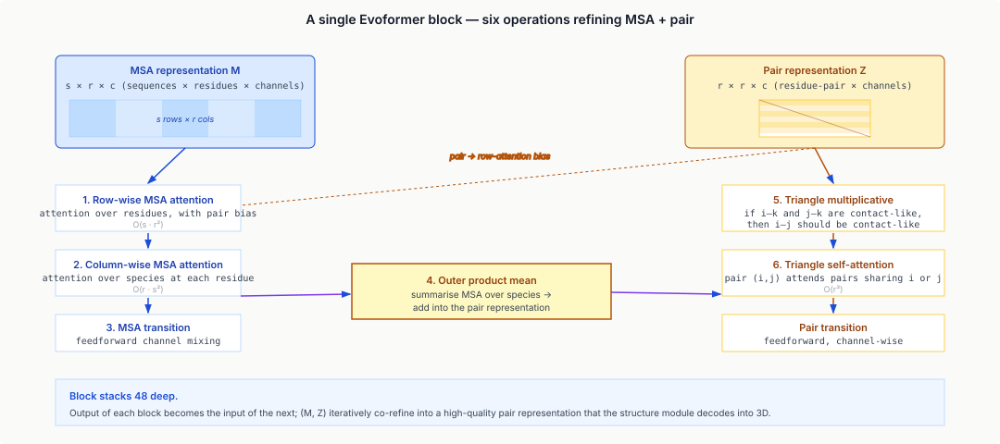
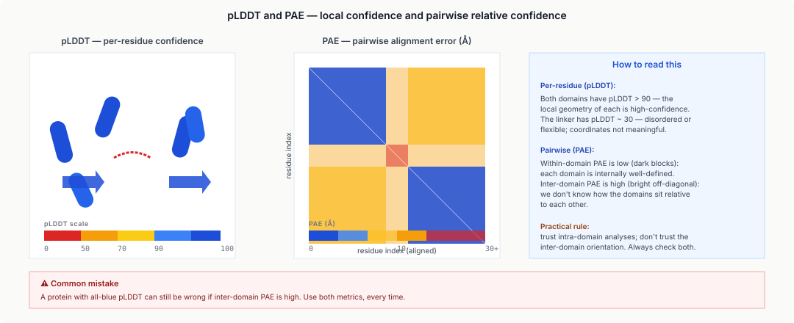
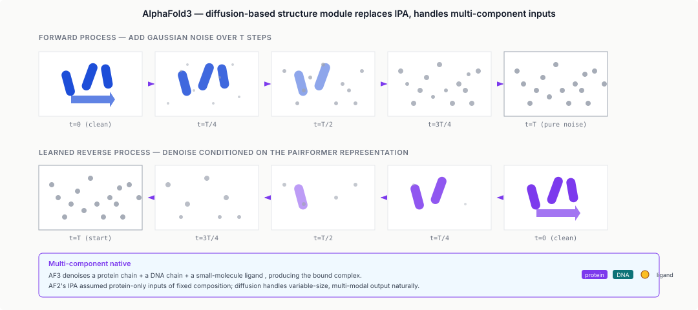
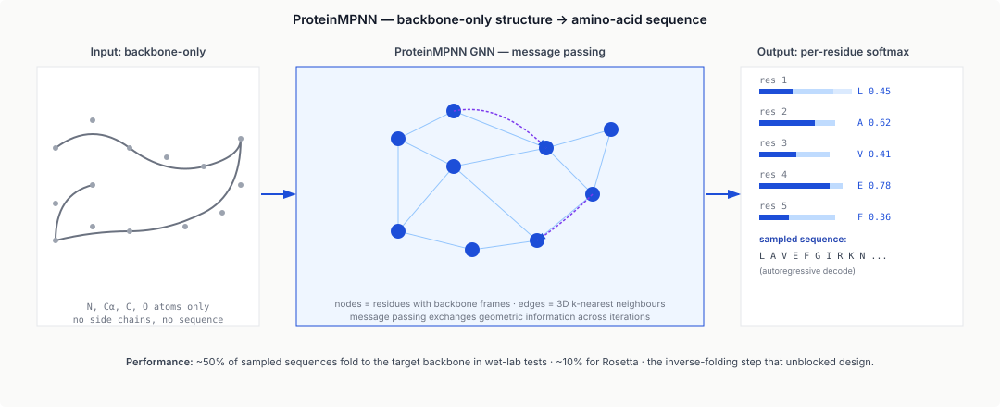
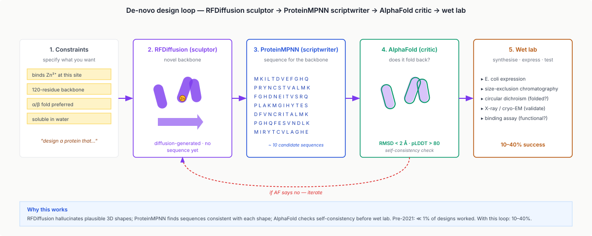
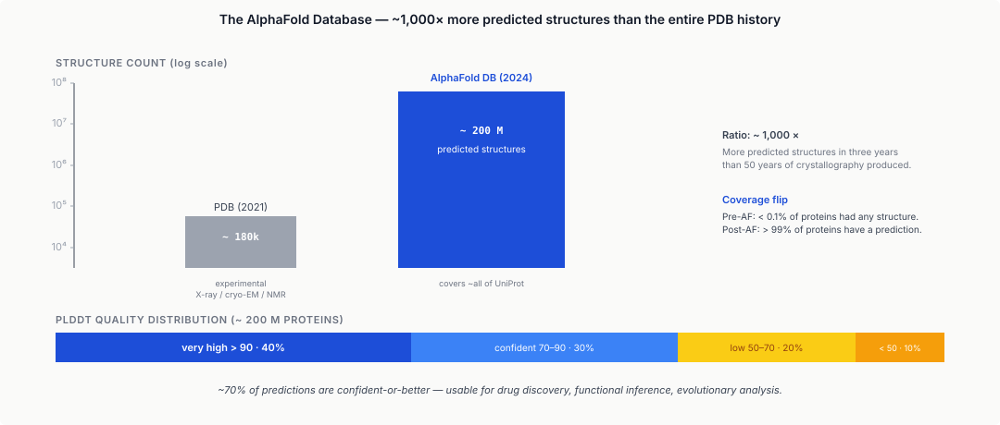

Seven moves: read coevolution from the MSA, refine a pair representation, decode coordinates with $\text{SE}(3)$ attention, recycle, trust pLDDT and PAE, invert the map for design, validate with AlphaFold itself.
Learning objectives
- Describe the four levels of protein structure (primary, secondary, tertiary, quaternary) and explain why the tertiary fold is the principal predictive target.
- Summarise the classical era (homology modelling, threading, CASP) and explain why it plateaued before 2018.
- Explain how multiple-sequence alignment covariation encodes 3D contact information; describe DCA / EVfold as inverse-covariance estimators.
- Walk through the AlphaFold2 architecture: Evoformer (axial attention on MSA + pair), structure module (invariant point attention), recycling.
- Interpret AlphaFold's confidence metrics (pLDDT, PAE) and describe failure modes (orphan proteins, disorder, multi-state conformations).
- Describe AlphaFold3's diffusion-based generation, multi-chain / ligand / nucleic-acid handling, and how single-sequence methods (ESMFold, ESM-3) differ.
- Explain inverse folding (ProteinMPNN) and diffusion-based protein design (RFDiffusion) as inverse problems with structural priors.
- Describe the AlphaFold Database (~200M predicted structures) and the field's practical post-2021 workflow.
Part 1 · 25 min Protein Structure Basics
1.1 Why structure matters
Lectures 1–14 have been about sequence: DNA, RNA, reads, variants, populations. Proteins are the functional molecules encoded by genes, and for almost every question about protein function — what does this enzyme do, how does this drug bind, why does this mutation cause disease — 3D structure is the relevant representation, not sequence.
Proteins are polymers of amino acids. Twenty standard amino acids (plus a few rare exceptions) make up the chemical alphabet. A typical protein is 50–2000 residues long. The functional behaviour — catalysis, binding, signalling, transport — emerges from the three-dimensional arrangement of those residues in space. A single residue by itself is inert. The chain folds, residues come into contact, those contacts form binding pockets, active sites, and interfaces. Structure determines function. Without structure, sequence is a flat book — readable but not interpretable.

1.2 Primary, secondary, tertiary, quaternary
Primary structure: the linear amino-acid sequence, N-terminus to C-terminus. A string in a 20-letter alphabet (plus two rare: selenocysteine U, pyrrolysine O). Encoded directly by the gene: codon → amino acid (§Lecture 1).
Secondary structure: local backbone conformation, driven by hydrogen bonds between backbone carbonyl (C=O) and amide (N-H) groups. Two dominant motifs:
- α-helix: right-handed spiral, 3.6 residues per turn. Backbone H-bonds within the helix. Stable, compact, common.
- β-strand: extended conformation; H-bonds to another strand (parallel or antiparallel) to form a β-sheet.
A typical globular protein is 30–50% helix + strand, the rest loops and turns. Secondary structure is predictable from primary sequence at ~85% accuracy with classical tools (PSIPRED) and essentially perfectly from AlphaFold's internal representations.
Tertiary structure: the full 3D arrangement of a single chain. This is what "solving a structure" usually means. Parameterised by the backbone torsion angles ($\phi$, $\psi$, $\omega$) plus side-chain torsions ($\chi_1$, $\chi_2$, …). Given these, atomic coordinates are fully determined.
Three representations dominate:
- Cartesian coordinates — $(x, y, z)$ per atom. ~8 atoms per residue. Standard PDB format.
- Internal coordinates — torsions + bond lengths + angles. More compact; AlphaFold outputs these and converts to Cartesian.
- Contact map — a binary or continuous $N \times N$ matrix where entry $(i, j)$ encodes the distance between residues $i$ and $j$. The dominant representation for contact-prediction methods.
Quaternary structure: assembly of multiple chains (subunits). Haemoglobin is 4 chains; the ribosome is ~80 chains plus RNA. Predicting quaternary requires predicting both individual chain structures and their interfaces — addressed by AlphaFold-Multimer and AlphaFold3.
1.3 The Anfinsen experiment
Christian Anfinsen (1961, Nobel Prize 1972) showed that a small protein (RNase A, 124 residues) could be completely denatured (unfolded), then refolded in vitro back to its native, fully-active structure, without any help. The instructions for folding are entirely in the sequence.
The implication: the folded structure is a minimum of a free-energy landscape over conformational space, and sequence uniquely determines that minimum. Computationally, this says the structure-prediction problem is well-defined: given a sequence, find the energy-minimising 3D arrangement.
In practice, finding that minimum is vastly harder than the Anfinsen formulation suggests. The conformational space is combinatorially enormous (Levinthal's paradox: if a protein sampled conformations randomly, it would take longer than the age of the universe to find the native state). Real proteins fold on millisecond-to-second timescales because the landscape is funnelled toward the native state — not sampled randomly.
1.4 Domains, folds, and the fold-space universe
Most proteins are built from domains — semi-independent structural units that can appear in different proteins as mix-and-match modules. A domain is typically 50–250 residues and folds independently.
Folds are repeated architectural patterns: specific arrangements of secondary-structure elements. Classical fold classifications:
- SCOP / SCOPe (Structural Classification Of Proteins). Hierarchical: Class → Fold → Superfamily → Family.
- CATH (Class, Architecture, Topology, Homology). Similar hierarchy, different methodology.
Estimated number of distinct folds in nature: ~1,000–2,000. Before AlphaFold, most had been observed experimentally; new folds were rare. After AlphaFold applied to metagenomic sequences, a modest number of new folds have been identified.
Domain composition is modular: eukaryotic proteins frequently have 2–6 domains, each contributing an independently-foldable piece. A typical kinase has a catalytic domain + regulatory domain + targeting domain. Predicting the whole protein = predicting each domain + predicting their spatial relationship.
Part 2 · 20 min The Classical Era
2.1 Homology modelling
For proteins with a sequence-similar experimental structure ("template") in the PDB, homology modelling is straightforward:
- Find a template: BLAST / HMMER search against PDB sequences.
- Align: compute the sequence alignment between query and template.
- Copy backbone: for aligned residues, copy the template's backbone coordinates.
- Model side chains: place query side chains using a rotamer library (SCWRL, Rosetta side-chain packer).
- Refine: energy-minimise the result.
Tools: Modeller (Sali 1993+), SWISS-MODEL (Schwede et al. 2003+). SWISS-MODEL runs the full pipeline as a web server.
Quality depends on sequence identity to template:
- > 50%: model is "close" (backbone RMSD ~1 Å), usable for most purposes.
- 30–50%: "twilight zone"; structural errors, but functional inference often still works.
- < 30%: unreliable; structural details can be completely wrong.
Classical limit: for proteins without a close PDB homologue (~25–30% identity), homology modelling fails. For orphan proteins (found only in a single species), it's unusable.
2.2 Threading and ab initio
Threading (Bowie, Lüthy & Eisenberg 1991; I-TASSER = Zhang 2008+) generalises homology modelling: for each known fold in the PDB, score how well the query sequence "fits" that fold using sequence-structure compatibility metrics. Pick the best-scoring fold, build the model. Good when the query shares a fold with a known protein but diverges at the sequence level.
Ab initio ("from the beginning"): predict structure without any template. Classical approaches:
- Fragment assembly (Rosetta, Baker 1997+). Represent short (9-residue) local fragments from the PDB as structural building blocks. Assemble with Monte Carlo sampling; score with a learned energy function.
- Molecular dynamics (Duan & Kollman 1998). Simulate the folding trajectory atom-by-atom with a physics-based force field. In 1998 this worked only for very small proteins (villin headpiece, 35 residues) after months of compute.
Both approaches produced moderate success for small proteins but plateaued on anything non-trivial.
2.3 CASP — the community benchmark
CASP (Critical Assessment of Structure Prediction) is the biennial blind-prediction experiment, run since 1994 by Moult et al. Participants receive sequences of soon-to-be-released experimental structures; they submit predictions; after the experimental structures are released, predictions are scored.
CASP tracks template-based modelling (TBM), free modelling (FM, no homologue), quaternary multimers, refinement, contact prediction, and more. Primary metric: GDT_TS (Global Distance Test, Total Score). 0–100; ~50 = "recognisable fold", ~70 = "good prediction", ~90+ = "experimental quality".
History, abbreviated:
- CASP1 (1994) – CASP8 (2008): slow, incremental progress. Homology models gradually improve; FM plateau.
- CASP9 – CASP12 (2010–2016): Rosetta dominates FM; Zhang-lab's I-TASSER leads TBM. FM best scores ~30–40 GDT_TS.
- CASP13 (2018): DeepMind's AlphaFold1 enters. FM jumps to ~60 GDT_TS — an unprecedented single-edition leap.
- CASP14 (2020): AlphaFold2 reaches ~90 GDT_TS on FM targets — effectively experimental quality.
- CASP15 – CASP16 (2022–2024): AlphaFold2 and successors dominate; methods compete in a narrower band. New targets: protein-protein complexes, protein-ligand docking, disorder.

2.4 Why the classical era plateaued
Two structural reasons the classical era couldn't break through:
- Template-dependence: without a PDB homologue, there was no structural signal to transfer.
- Energy functions were imperfect: Rosetta's energy function is an approximation to the real physics; its minimum doesn't always correspond to the native state. Improving the energy function incrementally didn't close the gap.
The breakthrough came from elsewhere: the information was already in the sequences, if you knew how to read it across many sequences at once.
Part 3 · 30 min MSA-Based Methods and Coevolution
3.1 Why coevolving residues are spatially close
Given a protein family (hundreds of homologues from different species), align them into a multiple sequence alignment (MSA). Each column is one residue position; each row is one sequence.
Observation: some pairs of columns vary together. If column $i$ mutates from L to V, column $j$ frequently also mutates (in the same sequences). These residues are coevolving.
Why? The physical explanation: residues $i$ and $j$ are in 3D contact in the folded structure. A mutation at one changes the local chemistry; the contacting residue must co-mutate to maintain stability. Evolution across many species sweeps many such double-mutations across the family. Reading that imprint — which column pairs co-mutate — recovers the contact map.

3.2 Pairwise mutual information and its flaws
Naive approach: for each column pair $(i, j)$, compute mutual information (MI) between the two columns treated as categorical distributions. High MI means the columns carry information about each other.
where $P(a)$ is the marginal probability of amino acid $a$ at position $i$, and $P(a, b)$ is the joint probability.
Problem: indirect correlations. If columns $i$–$j$ and $j$–$k$ are both in contact, then columns $i$–$k$ will also have high MI even if they aren't in direct contact. The signal is spread along the chain of correlations. Mutual information alone produces spurious "contacts" between residues that are merely both correlated with a common third residue.
3.3 Direct Coupling Analysis (DCA)
The insight that unlocked classical coevolution methods: inverse covariance. The partial correlation between two variables, controlling for all others, isolates direct statistical dependencies.
Define a Potts-model-like probability distribution over MSA sequences:
where $\sigma = (\sigma_1, \ldots, \sigma_L)$ is a sequence, $h_i$ are per-position biases (conservation), and $J_{ij}$ are pairwise couplings. Pairs with large $|J_{ij}|$ are directly coupled — indirect correlations have been "explained away" by the model.
Two classical algorithms to estimate $J_{ij}$:
- mfDCA (mean-field DCA; Morcos et al. 2011). Closed-form approximation. Fast.
- plmDCA (pseudolikelihood; Ekeberg et al. 2013). More accurate; the standard until the deep-learning era.
Given estimated $J_{ij}$, the contact score for pair $(i, j)$ is the Frobenius norm over the 20 × 20 coupling matrix:
Large $C_{ij}$ = predicted contact. EVfold (Marks et al. 2011) was the first well-known DCA-based contact predictor. On proteins with deep MSAs (> 1000 diverse sequences), EVfold's top-scored contacts were ~80% correct — far better than MI-based methods and enough to seed ab-initio folding.

3.4 MSA depth matters
DCA's accuracy depends critically on MSA depth — how many diverse sequences are in the family.
- < 50 sequences: DCA unreliable; estimation variance too high.
- 100–1,000 sequences: moderate accuracy.
- > 1,000 sequences: excellent; top-100 contacts ~80% correct.
- > 10,000 sequences (metagenomic MSAs): near-perfect.
Orphan proteins — those with no detectable homologues — are invisible to DCA. About 20% of human proteins are in this category or close to it, and DCA + Rosetta was uselessly bad on them. AlphaFold2 partially overcomes this: shallower MSAs (10–50 sequences) still produce usable predictions via deep-learning-based contact refinement.
3.5 From contacts to full structures
A predicted contact map doesn't give you coordinates directly. To go from contacts to 3D structure:
- Treat predicted contacts as soft constraints: $d_{ij} < 8$ Å.
- Run fragment assembly (Rosetta) or distance-geometry embedding (CNS) subject to these constraints.
- Pick the best-scoring resulting model.
DCA + Rosetta was the CASP12 state-of-the-art. It worked well for proteins with deep MSAs; it failed on shallow MSAs or complex topologies. AlphaFold1 (CASP13) replaced the Rosetta step with a neural-network-based distance-distribution predictor plus a gradient-descent folder. AlphaFold2 (CASP14) threw out the two-step architecture entirely in favour of end-to-end learning.
Part 4 · 60 min The AlphaFold2 Architecture
4.1 The input representation
AlphaFold2 (Jumper et al. 2021, Nature) takes a protein sequence and produces a 3D structure plus per-residue confidence. Its input is not just the sequence; it's the sequence plus its MSA (computed via search against large sequence databases: UniRef, MGnify, BFD).
Two data objects are maintained throughout the network:
- MSA representation $\mathbf{M} \in \mathbb{R}^{s \times r \times c}$ — $s$ sequences in the MSA × $r$ residues × $c$ channels (initially 256, later expanded).
- Pair representation $\mathbf{Z} \in \mathbb{R}^{r \times r \times c}$ — $r \times r$ residue-pair matrix × $c$ channels. Think of this as a "learned contact map with rich features per pair".
The network's job is to iteratively refine both representations, with each updating the other, until they encode enough geometric information for the structure module to produce coordinates.
4.2 Overall architecture
Three major components:
- Evoformer — ~48 blocks of axial attention and triangle updates that refine $(\mathbf{M}, \mathbf{Z})$ jointly. Most of the compute. §4.3.
- Structure module — 8 iterations of invariant point attention (IPA) plus a parameterised geometry updater that produces 3D coordinates. §4.5.
- Recycling — the output (updated pair representation + structure) is fed back to Evoformer as input; repeat 3–4 times. §4.6.
Plus: confidence heads (pLDDT, PAE, pTM) computed from the final representations; template embeddings if PDB templates exist.
![Top-to-bottom architectural flow. Input: protein sequence plus multiple-sequence alignment plus optional templates. Box 1: Evoformer with 48 blocks, maintaining MSA and pair representations. Box 2: Structure module with 8 iterations, consuming the final pair representation and a single representation, producing 3D coordinates. Feedback arrow labelled recycling from structure plus pair back to Evoformer input. Output: 3D structure with per-residue pLDDT and N-by-N PAE matrix. Annotation noting about 93 million trainable parameters.](../diagrams/lecture-15/05-af2-overview.svg)
4.3 The Evoformer
The Evoformer is 48 repeated blocks, each updating the MSA and pair representations. Each block has six sub-operations:
- Row-wise MSA attention with pair bias: each row (one MSA sequence) attended to itself with residue-position as the sequence axis. The pair representation $\mathbf{Z}$ biases the attention map. This is how pair information propagates into the MSA.
- Column-wise MSA attention: each column (one residue position across species) attended to itself along the species axis. Informs each residue about its homologous versions.
- MSA transition (feedforward).
- Outer product mean → pair update: the MSA is summarised into an outer-product-mean statistic over species and fed into the pair representation. Propagates MSA-derived information into the pair.
- Triangle multiplicative update: the pair representation updates itself using triangle geometry — if $i$–$k$ and $j$–$k$ are both "contact-like", then $i$–$j$ should be "contact-like" too.
- Triangle attention: attention-based version of the above. Each pair $(i, j)$ attends over all pairs sharing a residue $(i, k)$ or $(k, j)$.
Axial attention: rather than full $O(N^2)$ attention over the MSA — which would be $O(s^2 r^2)$ and infeasible at $s = 512$, $r = 512$ — row attention operates over one axis (residues, fixed sequence), column attention over the other (species, fixed residue). Each is $O(s \cdot r^2)$ or $O(r \cdot s^2)$; the combination is quadratic in one axis at a time, not their product. The "axial attention" pattern was popularised in image transformers (Ho et al. 2019) and adapted here.

4.4 Why does the Evoformer work?
An intuitive reading: the Evoformer's main job is to build a high-quality pair representation whose learned attention patterns encode not just "who contacts whom" but distances and orientations — enough geometric information for a downstream 3D embedder.
The MSA is the input signal: millions of evolutionary examples of which mutations co-occur. The pair representation is the output signal: a learned, richly-featured $N \times N$ matrix where pair $(i, j)$ encodes "what's the 3D relationship between residues $i$ and $j$". The Evoformer's 48 blocks iteratively refine this. Why 48? Empirical. Fewer → worse. More → diminishing returns, higher memory.
4.5 The structure module + IPA
After the Evoformer produces a final $(\mathbf{M}, \mathbf{Z})$, the structure module converts them into 3D coordinates. Architecture: 8 iterations of the same block. At each iteration:
- Take current backbone frames $\mathbf{T}_i \in \text{SE}(3)$ for each residue (an $\text{SE}(3)$ frame = 3D position + orientation).
- Run Invariant Point Attention (IPA) — attention where keys / queries / values live in 3D space relative to each residue's frame.
- Update frames: each residue gets translated and rotated based on the IPA output.
- Compute per-residue points (α-carbon and side-chain torsions).
The structure is iteratively refined: at each iteration every residue knows its current 3D position and the 3D positions of all others (via IPA); it then updates its position based on local geometry signals.
Invariant Point Attention:
- Attention keys and values are points expressed in each residue's own 3D frame.
- The attention weight between residue $i$ and residue $j$ depends on the distance between $i$'s query points (in its frame) and $j$'s key points (in $j$'s frame).
- Both points are re-expressed in a common frame for the distance — the attention is equivariant to global rotations and translations of the entire structure.
Equivariance means: if you rotate the input by any $R \in \text{SO}(3)$, IPA's outputs rotate by the same $R$. This respects the physics — the protein's energy, stability, and contacts don't depend on its orientation in the lab.
![Cartoon of the structure module's iterative refinement. Left: initial residue positions roughly stacked at origin with random orientations. Middle: after IPA iteration 1, residues have moved to approximate positions. Right: after 8 IPA iterations, the structure is fully folded. Below: detail of IPA showing query points in residue i's frame, key points in residue j's frame, both mapped to a common reference for distance computation, and the resulting attention weight. Annotation: SE(3)-equivariant by construction.](../diagrams/lecture-15/07-structure-module.svg)
4.6 Recycling and confidence
Recycling: after the structure module produces coordinates, feed the final pair representation and the current predicted structure back into the Evoformer as an input, then rerun. Typically 3–4 recycling iterations. Why: the Evoformer can be too aggressive in an early pass, reaching a weird intermediate state. Recycling lets the network iteratively correct, with each recycling cycle benefiting from the structure information produced previously.
Confidence heads:
- pLDDT (predicted local distance difference test). Per-residue, 0–100. pLDDT = 100 means "very confident this residue is correct within 1 Å"; 50 = "disordered or uncertain"; below 50 = probably wrong / disordered.
- PAE (Predicted Aligned Error). Per-pair, in Angstroms. $\text{PAE}_{ij}$ = expected error in residue $j$'s position if the structure were aligned to residue $i$'s frame. Low PAE = "$j$'s position is well-defined relative to $i$"; large PAE = "I don't know where $j$ is relative to $i$".
- pTM (predicted TM-score). A scalar, 0–1, summarising overall predicted correctness.
PAE is particularly useful for interpreting multi-domain proteins: residues within a domain have low inter-PAE (domain structure confident); residues across domains often have high inter-PAE (domain orientations uncertain).

4.7 Training regime
AlphaFold2 was trained on:
- PDB (~170k experimental structures at training time).
- UniRef90 + BFD (hundreds of millions of sequences for MSA generation).
- Self-distillation: predict structures for UniRef sequences, use high-confidence predictions as additional training data. This dramatically expanded the effective training set.
Training ran for ~11 days on 128 TPUv3 cores. Inference on a single protein takes ~1–5 minutes on a single GPU (depending on sequence length).
Part 5 · 20 min AlphaFold3 and Successors
5.1 AlphaFold3 architecture
AlphaFold3 (Abramson et al. 2024, Nature). Same basic goal, different architecture. Key changes:
- Diffusion-based structure module. Replaces IPA / iterative frame updates with a diffusion model: generate coordinates from Gaussian noise by iteratively denoising, conditioned on the Evoformer-like pair representation. More flexible; handles multi-chain and ligand positioning natively.
- Multi-chain + ligand + nucleic-acid support. Input can be a mixture: protein chains, nucleic-acid chains, small-molecule ligands, ions. Output includes all components in their predicted bound state.
- Simpler Evoformer-like backbone (the "Pairformer"). Still uses axial attention on pair + single representation, but drops the MSA axis once early representations are formed. Faster.
Use cases AlphaFold3 opens up: protein-drug docking, RNA-binding proteins with their bound RNA, antibody-antigen complexes, multi-subunit enzymes. Accuracy on the released benchmarks: ~60–80% of multi-chain / nucleic-acid tasks at experimental quality, depending on the sub-task.

5.2 RoseTTAFold and the open-source landscape
RoseTTAFold (Baek et al. 2021). Baker-lab implementation, open-source. Three-track architecture: sequence, pair, and 3D tracks updating each other. Slightly below AlphaFold2 on accuracy but fully available with weights. The workhorse for labs that couldn't run AlphaFold2 (which was weights-only for non-commercial use until 2022). RoseTTAFold2 (2023) and RoseTTAFold-All-Atom (2024) add multi-chain and ligand support.
OpenFold (Ahdritz et al. 2022). Open-source PyTorch reimplementation of AlphaFold2. Identical architecture, re-trained from scratch. Released with full training code and weights. Powers a great deal of downstream research.
ColabFold (Mirdita et al. 2022). A usability wrapper around AlphaFold2 and RoseTTAFold with fast MSA generation (replaces AF2's slow search with MMseqs2-based search). Runs in a Colab notebook in minutes. For most labs, ColabFold is what "running AlphaFold" actually means.
5.3 Single-sequence methods (ESMFold)
ESMFold (Lin et al. 2023). Uses a large protein language model (ESM-2, a transformer trained on 65M sequences via masked-residue prediction) as the feature extractor, replacing AlphaFold2's Evoformer + MSA search. Takes a single protein sequence, passes it through ESM-2 → projects to pair representation → structure module → coordinates.
Crucial property: no MSA needed. Runs ~60× faster than AlphaFold2 on the same hardware because the expensive MSA search is replaced by a single-sequence pass through ESM-2. Accuracy: lower than AlphaFold2 when MSAs are deep; comparable or better when MSAs are shallow or absent (orphan proteins, metagenomic proteins, synthetic / designed proteins). ESMFold has been used to predict ~600M metagenomic proteins in the ESM Metagenomic Atlas.
ESM-3 (2024). The latest in the ESM line. Handles proteins, structures, and function annotations in a single transformer. Can condition on partial input (e.g. "design a sequence that has this active site"). The frontier of protein foundation models.
5.4 The field's current state
As of 2025 the practical workflow is:
- Default: ColabFold (AlphaFold2 variant) for most proteins.
- Fast / orphan proteins: ESMFold.
- Multi-chain / ligand: AlphaFold3 (via the EMBL-EBI webserver) or RoseTTAFold-All-Atom.
- Custom / research: OpenFold with fine-tuning or feature probing.
Three years after AlphaFold2's CASP14 debut, the field is broadly saturated at ~90 GDT_TS for single-domain fold prediction. Remaining open problems are multi-chain, multi-state (conformational ensembles), and disorder.
Part 6 · 25 min Inverse Folding and Protein Design
6.1 The inverse problem
Structure prediction: sequence → structure. Forward direction. Inverse folding: structure → sequence. Given a desired 3D fold, what amino-acid sequence would produce it?
The inverse problem is ill-posed in a specific sense: many sequences can produce the same structure (the sequence-to-structure map is many-to-one). The interesting direction is to produce sequences that fold stably and at high accuracy into the target structure.
Applications:
- Stabilisation: given a natural protein, find a sequence with the same fold but higher melting temperature or lower aggregation.
- Functional engineering: given a de-novo designed structure, find a sequence that folds to it.
- Redesign: given a protein with a defect, find a near-native sequence that fixes it.
6.2 ProteinMPNN
ProteinMPNN (Dauparas et al. 2022, Science). Baker-lab inverse-folding network:
- Input: backbone-only 3D structure (N, Cα, C, O atoms per residue; no side chains, no sequence).
- Output: a probability distribution over 20 amino acids per residue; sampled sequences.
Architecture: message-passing graph neural network. Nodes = residues with their backbone coordinates. Edges = $k$-nearest-neighbours in 3D. Message-passing iterations exchange geometric information between neighbours. Final per-residue softmax over 20 amino acids. Autoregressive decoder: fill in residues one by one, conditioning on already-decoded ones.
Performance: sequences designed by ProteinMPNN fold to their target structure with much higher success rate than Rosetta-designed sequences. In experimental tests in the Baker lab, ~50% of ProteinMPNN designs express solubly and fold correctly, vs ~10% for Rosetta designs.

6.3 De novo protein design with RFDiffusion
The dream: design proteins from scratch — with structures and functions never seen in nature.
Rosetta-era design (Baker lab 2000+): start with an idealised topology (4-helix bundle, β-barrel), build a backbone matching the topology, use Rosetta's sequence-design module to pack amino acids that stabilise it, express in E. coli, test folding, iterate. Key results: fully de-novo miniproteins with novel folds (Koga et al. 2012); de-novo enzymes (some catalytic); de-novo binders.
RFDiffusion (Watson et al. 2023, Nature). Uses a diffusion model trained on the PDB to generate novel protein backbones. Input: specifications like "a 4-helix bundle", "binds this ligand here", "matches this active site". Output: a backbone structure satisfying the constraints.
Workflow:
- RFDiffusion: specify constraints, sample a backbone.
- ProteinMPNN: generate amino-acid sequence for that backbone.
- AlphaFold2 / ESMFold validation: check that the designed sequence folds back to the target backbone (self-consistency).
- Experimental validation: synthesise, express, characterise.
Success rate: in the 2023 Baker-lab paper, ~10–40% of RFDiffusion + ProteinMPNN designs expressed, folded, and exhibited the desired function (e.g. binding a small-molecule target). Without AlphaFold / ProteinMPNN, equivalent success rates were < 1%.

6.4 Safety and ethics
Protein design is a dual-use technology:
- Beneficial uses: therapeutic binders, novel enzymes for green chemistry, malaria vaccines, COVID-era receptor-binding-domain mimics, plastic-degrading enzymes.
- Concerning uses: designed toxins, designed pathogen proteins.
The field has started grappling with biosecurity. The Baker lab has adopted a screening policy (don't design certain classes of proteins); Anthropic's ASL-3 and similar thresholds explicitly reference bioweapon-uplift capabilities. Sharing model weights is now a deliberate policy decision, not an automatic open-source default.
As EE students with ML backgrounds, you may find yourself building these models. Know the dual-use issues.
Part 7 · 20 min What This Changes
7.1 The AlphaFold Database
AlphaFold Database (Varadi et al. 2022, EMBL-EBI hosted). Predicted structures for ~200M proteins covering almost all of UniProt. Public, freely accessible. Each structure is tagged with pLDDT colouring and PAE matrix.
Before 2021 the PDB had ~180k experimentally-determined structures. After the AlphaFold DB, the ratio of "available structural information" to "unexplored sequence" flipped — from < 0.1% of proteins having any structure to > 99%.
Users:
- Drug discovery. Every protein target now has a predicted structure to inspect. Druggability / pocket prediction, structure-based virtual screening on targets that previously had no structure.
- Functional annotation. Structure → function inference (fold similarity to known proteins of known function).
- Evolutionary studies. Comparing predicted structures across species reveals structural conservation invisible from sequence.
- Enzyme engineering. Given a predicted structure with a specific pocket, design mutations to alter substrate specificity.
The DB is updated regularly; v2 (2024) adds cryptic-pocket predictions and ligand-binding probability scores.

7.2 Drug discovery
Pre-AlphaFold, structure-based drug design required an experimentally-determined target structure. X-ray crystallography or cryo-EM, years of work, many failed targets. Most drug targets had no structure.
Post-AlphaFold: every human protein has a predicted structure. Drug discovery pipelines now include AlphaFold predictions as a routine input step. Caveats:
- AlphaFold predicts the apo (unbound) structure. The drug-bound (holo) structure can differ. For kinases, AlphaFold predicts the active conformation; many drugs bind the inactive conformation.
- Conformational ensembles: proteins fluctuate. Drug binding often exploits transient states AlphaFold doesn't capture.
- Allosteric sites: pockets that only form in specific conformational states are poorly predicted.
Nonetheless, the pharmaceutical industry has absorbed AlphaFold deeply. Every major pharma now has an AlphaFold-based workflow for target validation.
7.3 What's still hard
Three open frontiers:
- Conformational dynamics. A protein isn't one structure; it's an ensemble. AlphaFold predicts a dominant state but not the distribution. Recent work (AF2-multimer with MSA subsampling, AlphaFlow, Distributional Graphormer) addresses this partially.
- Intrinsically disordered regions. ~30% of eukaryotic proteins have significant disordered content. AlphaFold predicts these as low pLDDT — it knows they're uncertain but doesn't give you a distribution over their states. These are often functional (transcription factors, signalling motifs).
- Multi-state proteins. Kinases, transporters, ribosomes cycle through distinct functional states. AlphaFold predicts one state (usually the most abundant in training data). For multi-state function, predicting all states is required.
7.4 Single-cell / multi-modal extensions
Emerging work extends structure prediction to:
- Protein-RNA complexes: RoseTTAFold-Nucleic, AlphaFold3.
- Protein-DNA complexes: AlphaFold3, RoseTTAFold2.
- Large assemblies: the ribosome, the nuclear pore complex (hundreds of chains). AlphaFold3 handles 5–10 chains well; 100+ is still research.
- Membrane proteins: AlphaFold was trained on soluble proteins; membrane-protein prediction is strong but benefits from membrane-aware fine-tuning.
7.5 AI safety and the regulatory landscape
As of 2024–2025, biosecurity screening is becoming a norm for major model releases. Meta's ESM-3 underwent biosecurity review before release; Anthropic's ASL-3 explicitly references bioweapon-uplift risks; the US Executive Order on AI (2023) requires major model developers to notify the government of frontier capabilities.
The field is at an interesting moment where the open-science norm (§Lecture 14, Part 7) collides with dual-use concerns. How this resolves affects the pace of future progress.
Wrap-up · 10 min Takeaways, homework, and next lecture
What you should take away
- Protein structure is four levels. Primary = sequence; secondary = local H-bond patterns; tertiary = 3D fold; quaternary = multi-chain assembly. Tertiary is what "structure prediction" usually means.
- Anfinsen established that sequence → structure is a well-defined problem. The 50-year journey to AlphaFold2 was finding the algorithm.
- The classical era plateaued because it lacked a way to exploit the rich evolutionary information in MSA coevolution.
- DCA unlocked coevolution-based contact prediction by computing inverse covariances of amino-acid co-occurrence. EE framing: graphical-model estimation on categorical data.
- AlphaFold2's Evoformer + structure module is the breakthrough architecture. Evoformer refines (MSA, pair) iteratively via axial attention + triangle updates; structure module converts to 3D via $\text{SE}(3)$-equivariant Invariant Point Attention.
- pLDDT and PAE are calibrated confidence metrics. Use them — a structure without reading its confidence is dangerous.
- AlphaFold3, ESMFold, RoseTTAFold extend the toolbox: multi-chain + ligand (AF3), single-sequence / speed (ESMFold), open-source + multi-modal (RFAA).
- ProteinMPNN and RFDiffusion enable de-novo design. Inverse folding = inverse problem with strong structural prior. Design loop = RFDiffusion (backbone) → ProteinMPNN (sequence) → AlphaFold (validation) → experiment.
- The AlphaFold Database (~200M predicted structures) has flipped the field. Drug discovery, functional annotation, and evolutionary studies now assume a predicted structure.
- What's still hard: dynamics, disorder, multi-state function, large assemblies, dual-use / biosecurity.
Next lecture
ML in genomics: architectures, pitfalls, frontiers. A synthesis across previous lectures — pileups → CNN (DeepVariant); long-range sequence regulation → dilated conv + transformer (Enformer, Borzoi); count matrices → VAE (scVI); protein 3D → equivariant transformer (AlphaFold); molecular graphs → GNN. Plus the shared pitfalls: out-of-distribution generalisation, calibrated confidence, data leakage at biological scale.
Homework
- Install ColabFold locally (or use the web notebook). Predict structures for three of your favourite proteins: one with a close PDB homologue, one with a moderate MSA, one orphan. Compare pLDDT distributions. Which does best and why?
- From the AlphaFold Database, fetch predicted structures for ten human "dark proteins" (uncharacterised, lacking PDB homologues). What fraction have high-confidence (> 70 pLDDT) predictions? Pick one and use foldseek or Dali to find structural homologues; does it suggest a function?
- Use ProteinMPNN (via ColabDesign or Baker-lab GitHub) to generate 10 sequences for a given backbone. Evaluate sequence recovery rate (fraction of positions matching the original native) and AlphaFold's self-consistency score (does AF2 fold the new sequence back to the same backbone?).
- Read the AlphaFold2 Methods section (Jumper et al. 2021). For one Evoformer sub-operation, write a one-page explanation in your own words, including tensor shapes at input and output.
- Pick an AlphaFold-predicted structure with a large low-pLDDT region. Is it disordered (check DisProt or IUPred) or genuinely uncertain? How would you distinguish these experimentally?
Recommended reading
- Anfinsen, C. B. (1973). Principles that govern the folding of protein chains. Science 181, 223–230.
- Jumper, J., Evans, R., Pritzel, A., et al. (2021). Highly accurate protein structure prediction with AlphaFold. Nature 596, 583–589.
- Abramson, J., Adler, J., Dunger, J., et al. (2024). Accurate structure prediction of biomolecular interactions with AlphaFold 3. Nature 630, 493–500.
- Baek, M., DiMaio, F., Anishchenko, I., et al. (2021). Accurate prediction of protein structures and interactions using a three-track neural network. Science 373, 871–876. (RoseTTAFold.)
- Lin, Z., Akin, H., Rao, R., et al. (2023). Evolutionary-scale prediction of atomic-level protein structure. Science 379, 1123–1130. (ESMFold.)
- Dauparas, J., Anishchenko, I., Bennett, N., et al. (2022). Robust deep-learning-based protein sequence design using ProteinMPNN. Science 378, 49–56.
- Watson, J. L., Juergens, D., Bennett, N. R., et al. (2023). De novo design of protein structure and function with RFdiffusion. Nature 620, 1089–1100.
- Marks, D. S., Colwell, L. J., Sheridan, R., et al. (2011). Protein 3D structure computed from evolutionary sequence variation. PLoS ONE 6, e28766. (EVfold.)
- Morcos, F., Pagnani, A., Lunt, B., et al. (2011). Direct-coupling analysis of residue coevolution captures native contacts across many protein families. PNAS 108, E1293–E1301. (DCA.)
- Varadi, M., Anyango, S., Deshpande, M., et al. (2022). AlphaFold Protein Structure Database. Nucleic Acids Research 50, D439–D444.
- Mirdita, M., Schütze, K., Moriwaki, Y., et al. (2022). ColabFold: making protein folding accessible to all. Nature Methods 19, 679–682.
- AlphaFold database: alphafold.ebi.ac.uk
- ESM Metagenomic Atlas: esmatlas.com
- Foldseek: search.foldseek.com
Appendix — timing summary
| Block | Time | Cumulative |
|---|---|---|
| Part 1 — Protein Structure Basics | 25 min | 0:25 |
| Part 2 — The Classical Era | 20 min | 0:45 |
| Part 3 — MSA-Based Methods and Coevolution | 30 min | 1:15 |
| Part 4 — AlphaFold2 Architecture | 60 min | 2:15 |
| Part 5 — AlphaFold3 and Successors | 20 min | 2:35 |
| Part 6 — Inverse Folding and Protein Design | 25 min | 3:00 |
| Part 7 — What This Changes | 20 min | 3:20 |
| Wrap-up | 10 min | 3:30 |
Total: ~3h 30min of content.